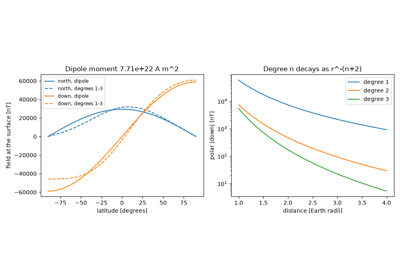
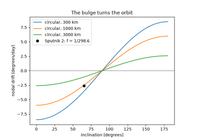
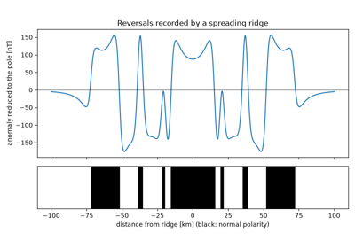

Geophysics examples#
One executed example per breakthrough in Breakthroughs in Geophysics, in chronological order, each with an asserted check of the result it shows. Download the Python source or notebook from each page. Geophysics: units, equations and validation records units and limits; all examples use deterministic synthetic inputs and require no downloads.

Gauss’s spherical-harmonic geomagnetic field (1839)
Gauss's spherical-harmonic geomagnetic field (1839)

King-Hele’s flattening from satellite orbits (1958)
King-Hele's flattening from satellite orbits (1958)

Cox, Doell and Dalrymple’s polarity timescale (1964)
Cox, Doell and Dalrymple's polarity timescale (1964)